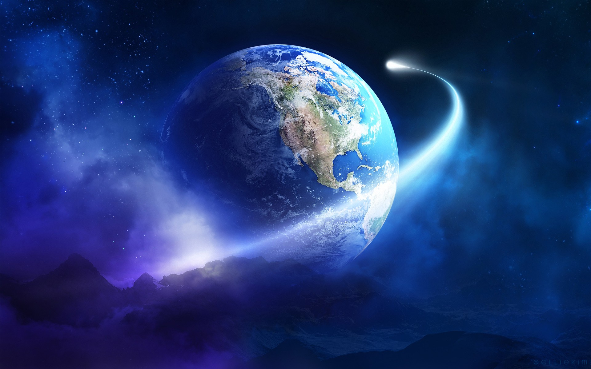
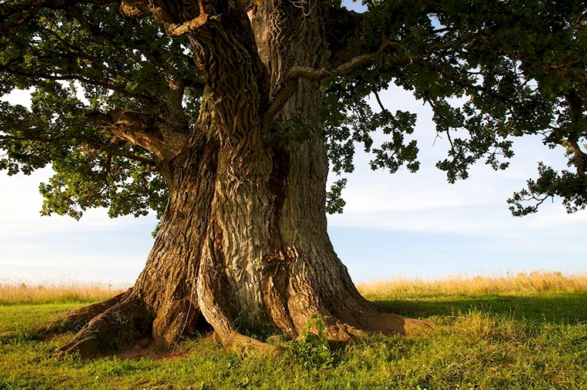

Дополнительная информация
Факты о животных
- Один из самых маленьких по размеру видов животных, птица колибри, делает от 60 до 80 махов крыльями в секунду.
- Зрение белки не способно различать красный цвет.
- Кто самый сильный в мире? Слон? Муравей? Нет, это жук-носорог. Он может поднимать груз, превышающий в 850 раз собственный вес!
- Самый крупный сухопутный хищник, проживающий на берегах Северного Ледовитого океана, — белый медведь. Вес самцов достигает 600 килограмм при длине тела до 2,5 метров.
- Мы привыкли, что уши располагаются на голове, а вот у сверчка слуховой аппарат разместился в необычном месте — на передних лапках, под коленками.
это моя первая страница
Привет мир
Земля окружена гравитацией, силой притяжения, которая притягивает все объекты на поверхности Земли к ее центру. Благодаря этой силе люди и другие объекты не падают в пространство. Но почему мы не падаем с поверхности Земли? Все дело в том, что гравитация действует на нас и на нашу окружающую среду равномерно со всех сторон. Это создает ощущение, что мы стоим на «плоской» поверхности, хотя на самом деле мы находимся на поверхности геоида.
Деревья растут, потому что поглощают воду и питание из почвы, а те в свою очередь с помощью солнечной энергии превращаются в новые материалы, способствующие росту стволов, веток и листьев. Этот процесс подобен росту животных и людей, которые с помощью питания добавляют материалы своим костям и мускулам, восстанавливают ткани своего организма.

В воде не тонут благодаря принципу Архимеда, который гласит, что на тело, погруженное в жидкость, действуют две силы: выталкивающая сила и сила тяжести. Выталкивающая сила зависит от плотности воды, а сила тяжести – от плотности тела.Если плотность тела меньше плотности воды, то выталкивающая сила превышает силу тяжести, и тело плавает на поверхности.
| Глубина | ||
|---|---|---|
| Километры | Мили | Слой |
| 0—60 | 0—37 | Литосфера (глубина разнится от 5 до 200 км) |
| 0—35 | 0—22 | Кора (глубина разнится от 5 до 70 км) |
| 35—60 | 22—37 | Верхняя часть мантии |
| 35—2890 | 22—1790 | Мантия |
| 100—200 | 62—125 | Астеносфера |
| 35—660 | 22—410 | Верхняя мезосфера (верхняя мантия) |
| 660—2890 | 410—1790 | Нижняя мезосфера (нижняя мантия) |
| 2890—5150 | 1790—3160 | Внешнее ядро |
| 5150—6371 | 3160—3954 | Внутреннее ядро |